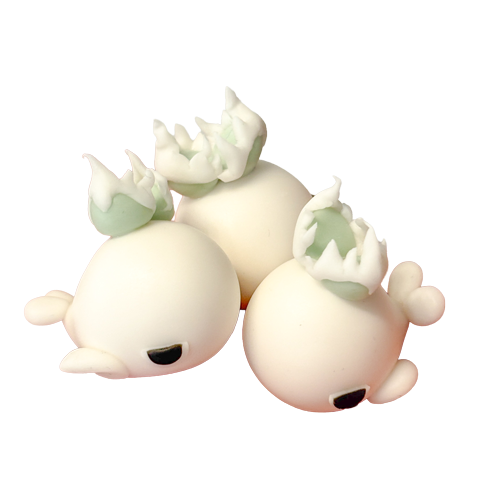

SECTION_01
研究員注目標本
CURATOR'S PICKS
初めて観測する方へ。
まずはこちらの個体からの観察を推奨します。
NO.001
UNIQUE

鋸歯生物
スニャグルトゥース
Snyaggletooth
鋸歯生物図鑑の最初の標本。アガベの葉の形状を模した鋸歯状の突起を持つ。移動速度は遅いが、光合成能力は高い。
TYPE
PLANT+
SIZE
M
SYM-001
COMMON

鋸歯生物と共生する鳥類
ハザマドリ
Agavus fissura avis
アガベの縦割り時に裂け目へ自らくちばしを差し込み、身体全体で開口を固定する鳥型共生生物。子株発生を促進する分泌液を塗布する。
RELATED
各種アガベ由来鋸歯生物
NO.013
COMMON

噴水状器官を持つ鯨類
ハクゲイ
White Heron
深海域において確認される、植物融合型の海洋鋸歯生物。月光を浴びて光合成を行う。
TYPE
ANIMAL+
SIZE
S